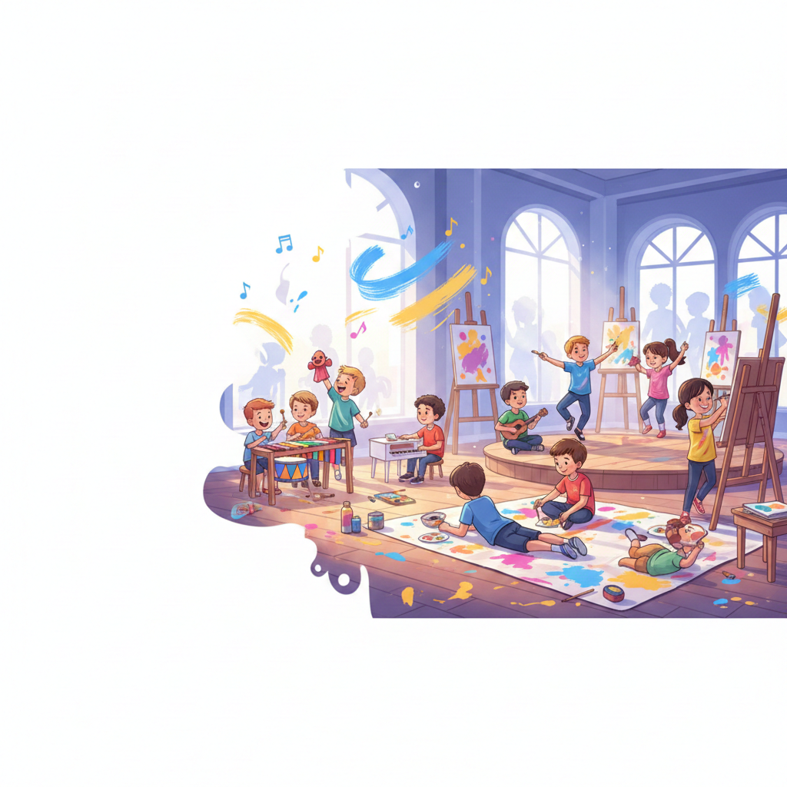

Talleres Vacacionales Musicala 2025 – Arte, juego y exploración para crecer felices

Explora la información de los Talleres Vacacionales
Haz clic en una opción para ver solo esa parte del contenido.
En Musicala, los talleres vacacionales tienen una estructura pedagógica clara, donde cada día incluye música, danza/teatro, artes plásticas y actividades lúdicas. Sin embargo, también sabemos que las vacaciones son un espacio ideal para explorar, jugar y crear desde lo que cada niño va descubriendo.
Por eso, trabajamos con un cronograma base que guía nuestras actividades, pero dejamos espacio para que los grupos y los mini-proyectos que surgen durante la semana enriquezcan la experiencia.
De esta manera, tanto si los niños asisten una, dos o varias semanas, cada semana funciona como un ciclo completo de creación, con inicio, desarrollo y un pequeño cierre artístico. Así aseguramos que todos los participantes aprovechen el tiempo al máximo, sin importar cuántos días puedan asistir.
¿Cuándo se realizan los Vacacionales?
Son dos temporadas durante el inicio y finald de año:
● 24 de noviembre al 19 de diciembre
● 12 de enero al 6 de febrero
Sin embargo, sabemos que muchas familias viajan o tienen horarios cambiantes, así que cada niño puede asistir en las semanas que pueda.
Cada semana es independiente y tiene un inicio, desarrollo y cierre propio.
🎭💃🎶 ¿Qué hacemos en Musicala cada semana?
Cada semana trabajamos cuatro grandes áreas que se combinan en pequeños proyectos:
Una mini obra de teatro
Una coreografía o secuencia corporal
Una pieza musical
Una galería o una creación artística especial
Exploración Corporal (Danza + Teatro)
Integramos movimiento, expresión, ritmo, imaginación y juego dramático, siempre adaptado a la edad de cada grupo. Al igual que en música, trabajamos tres componentes:
1. Componente Técnico (Danza + Teatro)
Aquí desarrollamos habilidades físicas y expresivas fundamentales.
Danza – Técnica Corporal
● Calentamientos guiados: movilidad articular y estiramientos seguros.
● Patrones de movimiento: marchas, desplazamientos, diagonales básicas.
● Construcción grupal con inicio, desarrollo y final simple.
Expresión corporal integrada
● Combinar movimientos con emociones.
● Pequeñas muestras internas (no obligatorias).
● Actividades en dúos o tríos para fortalecer convivencia.
En palabras sencillas: En Danza y Teatro fortalecemos el cuerpo, la creatividad y la confianza. Hacemos patrones de movimiento, juegos teatrales, expresión emocional y mini-creaciones semanales. Los niños se mueven, inventan y actúan desde el juego, pero también construyen habilidades reales en ritmo, coordinación, presencia y trabajo en equipo.
Exploración Musical
Nuestra propuesta musical en los vacacionales está basada en una estructura progresiva que se desarrolla a lo largo de la semana, integrando tres componentes fundamentales:
1. Componente Técnico
Aquí fortalecemos habilidades motrices y musicales fundamentales según el instrumento del día. Incluye actividades como:
● Lectura rítmica simple a través de tarjetas, colores o iconos.
Aprestamiento Musical
● Exploración de timbres: cómo suenan los instrumentos y por qué.
● Dinámicas: fuerte–suave, rápido–lento.
● Juegos auditivos de imitación y reconocimiento.
Apreciación Musical
● Escuchar obras cortas y reconocer emociones, intensidades y capas sonoras.
● Descubrir géneros adecuados para su edad (latinos, infantiles, cumbia, pop suave, folclor).
● Conversar sobre lo que “siente” o “imagina” con cada sonido.
3. Componente de Obras
Durante la semana trabajamos repertorio sencillo y progresivo que permite integrar técnica y teoría sin frustración.
Canciones con 3, 4 y 5 notas
Ejemplos típicos:
● “123”
● “1234”
● “12345”
Cada canción se adapta al instrumento del día:
● Lunes: canto (melodía y afinación).
● Martes: percusión (patrones de acompañamiento).
● Miércoles: melodía en xilófono/piano.
● Jueves: acompañamiento simple en ukelele.
● Viernes: integración completa en un ensamble grupal.
En palabras para acudientes y cuidadores: En Musicala trabajamos la música desde tres pilares: técnica, teoría y repertorio. Aprenden desde el juego, pero construyendo bases reales: gimnasia dactilar, patrones rítmicos, melodías sencillas, lectura musical y canciones cortas que ellos pueden interpretar. Cada día descubren un instrumento distinto y al final de la semana lo unen todo en un pequeño ensamble grupal.
Exploración Artística (Artes Plásticas)
En Artes Plásticas, los niños exploran materiales, técnicas y procesos creativos de manera progresiva. Cada semana desarrollan una creación diferente (mini-galería, personajes, escenografías, objetos artísticos, etc.), combinando técnica, teoría y expresión libre.
1. Componente Técnico (Artes Plásticas)
Trabajamos habilidades manuales y gráficas fundamentales para expresarse con seguridad y cuidado.
Dibujo
● Trazos básicos: líneas rectas, curvas, espirales, “dientes de león”.
● Control de presión: suave–medio–fuerte.
● Formas básicas: círculo, cuadrado, triángulo, óvalo.
● Proporciones iniciales y composición simple.
Pintura y acuarelas
● Técnicas básicas de pincel: puntillismo, barrido, degradado.
● Mezcla de colores primarios y secundarios.
● Agua-control: húmedo sobre seco / húmedo sobre húmedo.
● Identificación de paletas frías, cálidas y análogas.
Modelado (plastilina o arcilla)
● Técnicas base: rollos, esferas, planchas.
● Uniones seguras y creación de volumen.
● Modelado de figuras sencillas (animales, personajes, formas imaginarias).
Collage y reciclaje creativo
● Recorte seguro y uso adecuado de tijeras.
● Combinación de texturas (papel, cartón, revistas, fibras).
● Ensamblaje de piezas para crear personajes u objetos.
● Exploración de materiales reutilizables para proyectos artísticos.
2. Componente Teórico (Artes Plásticas)
Explicado de forma sencilla, contextual y siempre desde la experiencia.
Teoría del color
● Colores primarios, secundarios y terciarios.
● Contrastes y armonías.
● Luz–sombra básica para dar volumen simple.
Elementos del arte
● Línea, forma, color, textura, espacio.
● Introducción a composición: centro de interés, equilibrio visual.
● Repetición, ritmo visual y patrones.
Apreciación artística
● Conversar sobre obras infantiles, ilustraciones, esculturas simples.
● Identificar emociones en colores y formas.
● Observar objetos cotidianos y reinterpretarlos artísticamente.
3. Componente de Obras (Producción Artística)
Cada semana se construye un producto final que mezcla técnica, teoría y creatividad.
Ejemplos de proyectos semanales:
● Mini-galería personal con dibujos, pinturas y collage.
● Creación de personajes (dibujados o modelados).
● Escenografías o elementos visuales que complementan teatro o danza.
● Pequeñas esculturas o figuras con materiales reciclados.
● Cuadros y composiciones con diferentes técnicas mixtas.
El proyecto final cambia según cada grupo, pero siempre busca integrar lo aprendido, mostrar procesos, valorar la intención de cada niño y fomentar el orgullo por su creación.
En palabras sencillas: En Artes Plásticas exploramos dibujo, pintura, acuarelas, collage, modelado y reciclaje creativo. Trabajamos técnica y teoría de manera sencilla, mientras construimos proyectos semanales: desde mini-galerías hasta personajes propios. Aquí cada niño crea con intención, experimenta y descubre nuevas formas de expresarse.
Talleres Lúdicos y Actividades Grupales
● Juegos de mesa, retos cooperativos, dinámicas teatrales, juegos musicales, actividades de equipo.
● Espacios para socializar, hacer amigos y practicar habilidades socioemocionales.
Proyectos Semanales Temáticos
Cada semana desarrollamos un mini-proyecto que une todas las áreas:
● Una historia inventada.
● Una coreografía.
● Una canción de grupo.
● Una mini-galería artística.
● Un número teatral.
● O una mezcla de todo.
Las temáticas cambian cada año, pero siempre están ligadas a cuidado ambiental, naturaleza, bienestar personal y convivencia.
¿Qué pueden esperar las familias?
Un espacio seguro y amoroso
Cuidamos a cada niño con acompañamiento emocional, escucha y respeto.
Aprendizaje real, pero sin rigidez
Tenemos una base pedagógica clara, pero adaptamos las actividades a cada grupo y a los intereses que vayan apareciendo.
Un ambiente creativo
Dejan volar la imaginación, inventan historias, bailan, cantan, crean obras y juegan.
Proyectos visibles
Cada semana se ve un resultado: muestra, creación, galería o ensamble. La presentación nunca es obligatoria si algún niño no desea participar.
Diversión asegurada
Porque son vacaciones, y se trata también de disfrutar.
Resumen general
En Musicala, cada participante disfruta actividades diseñadas para su desarrollo creativo y emocional. Nuestra estructura pedagógica nos orienta, pero la flexibilidad y la exploración son parte esencial de la experiencia. De esta forma, acudientes y cuidadores pueden estar tranquilos de que su hijo o hija vive momentos de aprendizaje valiosos y enriquecedores.
CRONOGRAMA Y CONTENIDOS – Talleres Vacacionales Musicala 2025
(4 horas por día — sin horas exactas — si hay festivos, ajustamos sin alterar los contenidos.)
Distribución diaria:
● Artes Plásticas – 1 hora.
● Exploración Corporal (Danza + Teatro) – 1 hora.
● Exploración Musical – 1 hora.
● Onces – 30 minutos.
● Talleres Lúdicos – 30 minutos.
Semana 1 – Exploración Creativa
Enfoque de la Semana: Exploración Creativa.
Descripción general: Adaptación al grupo, descubrimiento de materiales y juegos de ritmo, color y movimiento.
Estructura de los días (Día 1 a Día 5)
Para que cada familia pueda adaptarse a su propio calendario, nombramos los días como
Día 1, Día 2, Día 3, Día 4 y Día 5.
Cada día mantiene la misma estructura de 4 horas de trabajo más onces y tiempo lúdico; lo que cambia es
el instrumento o enfoque dentro de la Exploración Musical.
Día 1 – Canto
Exploración Musical del día: Canto (melodía y afinación), con ejercicios de respiración, proyección y gimnasia vocal.
Hora 1: Artes Plásticas.
Hora 2: Exploración Corporal (Danza + Teatro).
Hora 3: Exploración Musical – Canto.
30 min: Onces.
30 min: Talleres Lúdicos.
Día 2 – Percusión y Orff
Exploración Musical del día: Percusión y Orff con gimnasia dactilar, patrones rítmicos y acompañamientos simples.
Hora 1: Artes Plásticas.
Hora 2: Exploración Corporal (Danza + Teatro).
Hora 3: Exploración Musical – Percusión y Orff.
30 min: Onces.
30 min: Talleres Lúdicos.
Día 3 – Xilófono y Piano
Exploración Musical del día: Xilófono y piano con patrones melódicos de 3, 4 y 5 notas y coordinación mano–dedo.
Hora 1: Artes Plásticas.
Hora 2: Exploración Corporal (Danza + Teatro).
Hora 3: Exploración Musical – Xilófono y Piano.
30 min: Onces.
30 min: Talleres Lúdicos.
Día 4 – Ukelele
Exploración Musical del día: Ukelele con acordes básicos (C, Am, F), patrones de rasgueo iniciales y acompañamientos cortos.
Hora 1: Artes Plásticas.
Hora 2: Exploración Corporal (Danza + Teatro).
Hora 3: Exploración Musical – Ukelele.
30 min: Onces.
30 min: Talleres Lúdicos.
Día 5 – Ensamble
Exploración Musical del día: Ensamble que integra lo trabajado en la semana: canto, percusión, teclados y ukelele, con coordinación grupal y escucha activa.
Hora 1: Artes Plásticas.
Hora 2: Exploración Corporal (Danza + Teatro).
Hora 3: Exploración Musical – Ensamble.
30 min: Onces.
30 min: Talleres Lúdicos.
● Técnico: Trazos básicos, control de presión, mezclas simples de color, recorte seguro.
● Teórico: Elementos del arte (línea, forma, color), paletas frías y cálidas.
● Obras: Mini-galería inicial o creación de personajes sencillos.
● Obras: Canciones cortas (“123”) cantadas y con percusión suave.
Mini muestra interna: exposición + escena corta + canción de 3 notas.
Semana 2 – Cuerpo y Movimiento
Enfoque de la Semana: Cuerpo y Movimiento.
Descripción general: Mayor exploración expresiva: color, textura y movimiento.
Estructura de los días (Día 1 a Día 5)
Para que cada familia pueda adaptarse a su propio calendario, nombramos los días como
Día 1, Día 2, Día 3, Día 4 y Día 5.
Cada día mantiene la misma estructura de 4 horas de trabajo más onces y tiempo lúdico; lo que cambia es
el instrumento o enfoque dentro de la Exploración Musical.
Día 1 – Canto
Exploración Musical del día: Canto (melodía y afinación), con ejercicios de respiración, proyección y gimnasia vocal.
Hora 1: Artes Plásticas.
Hora 2: Exploración Corporal (Danza + Teatro).
Hora 3: Exploración Musical – Canto.
30 min: Onces.
30 min: Talleres Lúdicos.
Día 2 – Percusión y Orff
Exploración Musical del día: Percusión y Orff con gimnasia dactilar, patrones rítmicos y acompañamientos simples.
Hora 1: Artes Plásticas.
Hora 2: Exploración Corporal (Danza + Teatro).
Hora 3: Exploración Musical – Percusión y Orff.
30 min: Onces.
30 min: Talleres Lúdicos.
Día 3 – Xilófono y Piano
Exploración Musical del día: Xilófono y piano con patrones melódicos de 3, 4 y 5 notas y coordinación mano–dedo.
Hora 1: Artes Plásticas.
Hora 2: Exploración Corporal (Danza + Teatro).
Hora 3: Exploración Musical – Xilófono y Piano.
30 min: Onces.
30 min: Talleres Lúdicos.
Día 4 – Ukelele
Exploración Musical del día: Ukelele con acordes básicos (C, Am, F), patrones de rasgueo iniciales y acompañamientos cortos.
Hora 1: Artes Plásticas.
Hora 2: Exploración Corporal (Danza + Teatro).
Hora 3: Exploración Musical – Ukelele.
30 min: Onces.
30 min: Talleres Lúdicos.
Día 5 – Ensamble
Exploración Musical del día: Ensamble que integra lo trabajado en la semana: canto, percusión, teclados y ukelele, con coordinación grupal y escucha activa.
● Obras: Personajes y objetos para escena (máscaras, accesorios).
● Técnico: Secuencias latinas y urbanas adaptadas, disociaciones, uso del espacio.
● Teórico: Musicalidad, niveles, intención del movimiento.
● Obras: Mini-coreografías de 16 a 32 tiempos o improvisaciones escénicas.
● Técnico: Patrones rítmicos Orff, melodías de 4 notas en teclado.
● Teórico: Ritmo figura/pulso; reconocimiento de notas en xilófono.
● Obras: Canciones de 4 notas (“1234”) con acompañamiento rítmico.
Coreografía corta, escena y pieza musical con 4 notas.
Semana 3 – Música y Sonido
Enfoque de la Semana: Música y Sonido.
Descripción general: Integración de color, forma y sonido.
Estructura de los días (Día 1 a Día 5)
Para que cada familia pueda adaptarse a su propio calendario, nombramos los días como
Día 1, Día 2, Día 3, Día 4 y Día 5.
Cada día mantiene la misma estructura de 4 horas de trabajo más onces y tiempo lúdico; lo que cambia es
el instrumento o enfoque dentro de la Exploración Musical.
Día 1 – Canto
Exploración Musical del día: Canto (melodía y afinación), con ejercicios de respiración, proyección y gimnasia vocal.
Hora 1: Artes Plásticas.
Hora 2: Exploración Corporal (Danza + Teatro).
Hora 3: Exploración Musical – Canto.
30 min: Onces.
30 min: Talleres Lúdicos.
Día 2 – Percusión y Orff
Exploración Musical del día: Percusión y Orff con gimnasia dactilar, patrones rítmicos y acompañamientos simples.
Hora 1: Artes Plásticas.
Hora 2: Exploración Corporal (Danza + Teatro).
Hora 3: Exploración Musical – Percusión y Orff.
30 min: Onces.
30 min: Talleres Lúdicos.
Día 3 – Xilófono y Piano
Exploración Musical del día: Xilófono y piano con patrones melódicos de 3, 4 y 5 notas y coordinación mano–dedo.
Hora 1: Artes Plásticas.
Hora 2: Exploración Corporal (Danza + Teatro).
Hora 3: Exploración Musical – Xilófono y Piano.
30 min: Onces.
30 min: Talleres Lúdicos.
Día 4 – Ukelele
Exploración Musical del día: Ukelele con acordes básicos (C, Am, F), patrones de rasgueo iniciales y acompañamientos cortos.
Hora 1: Artes Plásticas.
Hora 2: Exploración Corporal (Danza + Teatro).
Hora 3: Exploración Musical – Ukelele.
30 min: Onces.
30 min: Talleres Lúdicos.
Día 5 – Ensamble
Exploración Musical del día: Ensamble que integra lo trabajado en la semana: canto, percusión, teclados y ukelele, con coordinación grupal y escucha activa.
Hora 1: Artes Plásticas.
Hora 2: Exploración Corporal (Danza + Teatro).
Hora 3: Exploración Musical – Ensamble.
30 min: Onces.
30 min: Talleres Lúdicos.
● Técnico: Técnicas mixtas (pintura + collage), modelado de volumen.
● Teórico: Armonías básicas de color; centro de interés.
● Obras: Obras visuales que acompañan música (fondos, carteles).
● Obras: Canciones de 5 notas (“12345”) y rasgueos básicos.
Ensamble musical sencillo, escena musicalizada e intervención visual.
Semana 4 – Arte Integrado
Enfoque de la Semana: Arte Integrado.
Descripción general: Proyecto final que mezcla música, danza/teatro y artes plásticas.
Estructura de los días (Día 1 a Día 5)
Para que cada familia pueda adaptarse a su propio calendario, nombramos los días como
Día 1, Día 2, Día 3, Día 4 y Día 5.
Cada día mantiene la misma estructura de 4 horas de trabajo más onces y tiempo lúdico; lo que cambia es
el instrumento o enfoque dentro de la Exploración Musical.
Día 1 – Canto
Exploración Musical del día: Canto (melodía y afinación), con ejercicios de respiración, proyección y gimnasia vocal.
Hora 1: Artes Plásticas.
Hora 2: Exploración Corporal (Danza + Teatro).
Hora 3: Exploración Musical – Canto.
30 min: Onces.
30 min: Talleres Lúdicos.
Día 2 – Percusión y Orff
Exploración Musical del día: Percusión y Orff con gimnasia dactilar, patrones rítmicos y acompañamientos simples.
Hora 1: Artes Plásticas.
Hora 2: Exploración Corporal (Danza + Teatro).
Hora 3: Exploración Musical – Percusión y Orff.
30 min: Onces.
30 min: Talleres Lúdicos.
Día 3 – Xilófono y Piano
Exploración Musical del día: Xilófono y piano con patrones melódicos de 3, 4 y 5 notas y coordinación mano–dedo.
Hora 1: Artes Plásticas.
Hora 2: Exploración Corporal (Danza + Teatro).
Hora 3: Exploración Musical – Xilófono y Piano.
30 min: Onces.
30 min: Talleres Lúdicos.
Día 4 – Ukelele
Exploración Musical del día: Ukelele con acordes básicos (C, Am, F), patrones de rasgueo iniciales y acompañamientos cortos.
Hora 1: Artes Plásticas.
Hora 2: Exploración Corporal (Danza + Teatro).
Hora 3: Exploración Musical – Ukelele.
30 min: Onces.
30 min: Talleres Lúdicos.
Día 5 – Ensamble
Exploración Musical del día: Ensamble que integra lo trabajado en la semana: canto, percusión, teclados y ukelele, con coordinación grupal y escucha activa.
Hora 1: Artes Plásticas.
Hora 2: Exploración Corporal (Danza + Teatro).
Hora 3: Exploración Musical – Ensamble.
30 min: Onces.
30 min: Talleres Lúdicos.
● Técnico: Ilustración, escenografía, construcción de elementos visuales.
● Teórico: Composición escénica; diseño del espacio.
● Obras: Creación de escenografía o piezas visuales para obra o performance.
● Técnico: Montaje corporal, entradas y salidas, secuencias fluidas.
● Teórico: Continuidad escénica, cohesión grupal.
● Obras: Mini-obra o performance.
● Técnico: Integración vocal, percusión, teclado y ukelele.
● Teórico: Ensamble grupal y escucha del otro.
● Obras: Canción final uniendo de 3 a 5 notas e instrumentos del ciclo.
Performance final que integra artes, danza–teatro y música.
Nota para acudientes
Este cronograma sirve como guía estructurada para las cuatro semanas de vacacionales.
Si alguna semana incluye festivo, reorganizamos el orden de los días sin perder ninguna actividad.
Cada semana tiene un inicio, desarrollo y cierre propio, así que los niños pueden asistir en cualquier semana sin quedar rezagados.
Participación opcional en Musicala Fest
Quienes lo deseen pueden unirse al Musicala Fest, donde se comparte una de las creaciones realizadas durante los vacacionales.
La participación es voluntaria y se adapta al tiempo de cada familia.